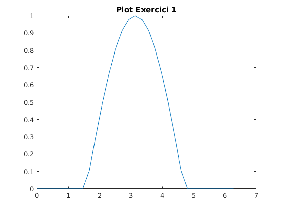
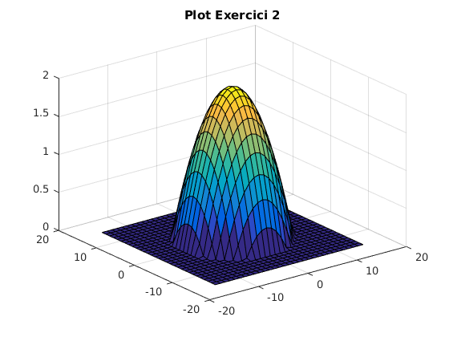
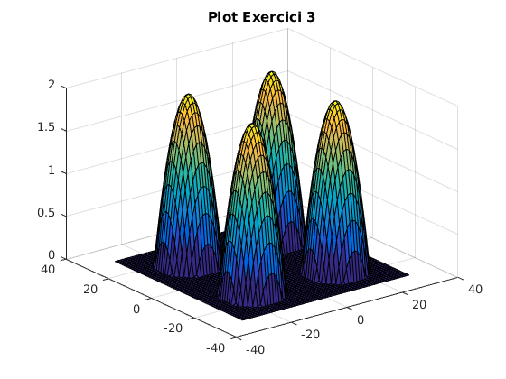
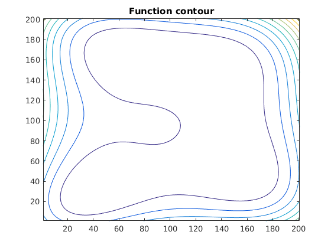

clc, clear all
A = [1 2 3 4 5];
B = [1; 1; 1; 1; 1];
C = B * A
A1 = [-1; 0; -1; 2];
B1 = [1 1 1];
C1 = A1 * B1
x = 0:2*pi/30:2*pi;
y = -cos(x);
z = y > 0;
w = y .* z;
figure(1),plot(x,w);
title('Plot Exercici 1');
x = -15:1:15;
y = -15:1:15;
[X Y] = meshgrid(x);
f = -((X./7).^2 + (Y./7).^2) + 2;
z = f > 0;
w = f .* z;
figure(3), surf(X,Y,w),title('Plot Exercici 2');
W = [w w; w w]; C = [X-15 X+15; X-15 X+15]; B = [Y+15 Y-15; Y-15 Y+15];
figure(4),surf(C, B, W),title('Plot Exercici 3');
x = -5:0.05:5;
y = -5:0.05:5;
[X Y] = meshgrid(x,y);
f2 = (X.^2+Y-5).^2+(X+Y.^2-9).^2;
figure(5),contour(f2);
title('Function contour');
[v p] = min(f2); [v1 p1] = min(min(f2)); [p1 p(p1)];
MinimumValue = f2(p(p1),p1)
MinPoint = [(p1-100)*0.05 (p(p1)-100)*0.05]
C =
1 2 3 4 5
1 2 3 4 5
1 2 3 4 5
1 2 3 4 5
1 2 3 4 5
C1 =
-1 -1 -1
0 0 0
-1 -1 -1
2 2 2
MinimumValue =
0.0016
MinPoint =
-2.8500 -3.4000
   